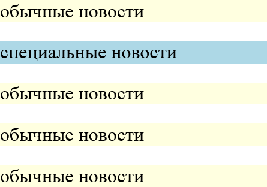
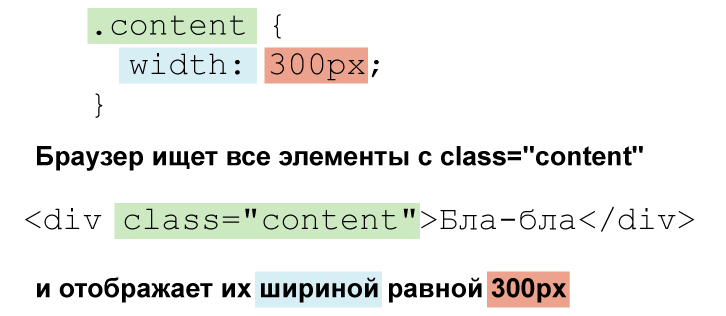
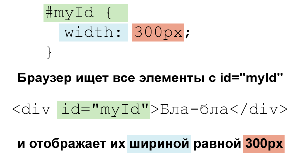
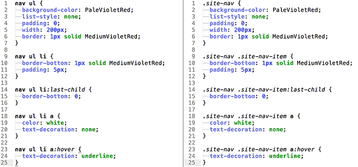
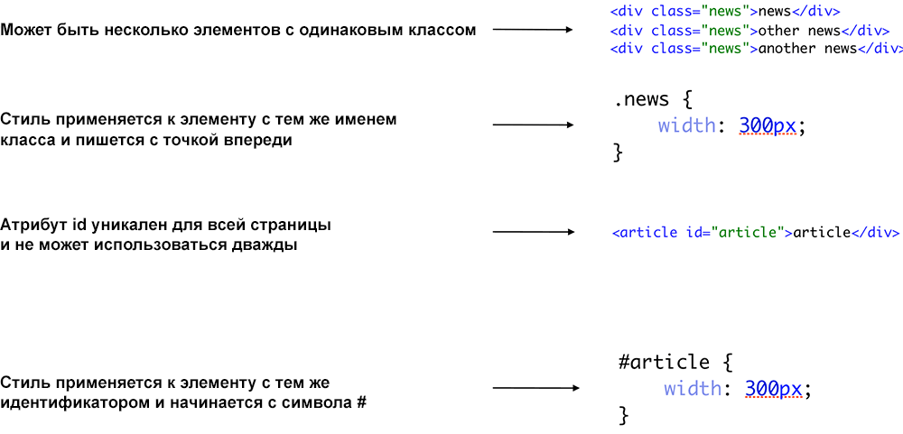

Понимание селекторов CSS
Пример меню с двумя псевдо-селекторами позволяет нам узнать ещё одну важную концепцию. Вы, возможно, заметили, что каждый селектор нашего кода CSS состоит из тех же имён, что и соответствующие теги HTML. Таким образом, когда мы что-то меняем в структуре кода, мы также должны изменить CSS. Например, иногда это может быть необходимо, когда нам больше не требуется заголовок.
<h1>Джастин Бивер сбрил усы</h1>Вместо этого используем элемент <p>.
<p>Джастин Бивер сбрил усы</p>С таким изменением мы рискуем получить ошибки. Чтобы минимизировать этот риск, в CSS мы используем классы и идентификаторы.
Каждый HTML-элемент может содержать специальный атрибут с именем class, в котором мы можем задать одно или несколько имён класса. Вот несколько примеров добавления этого атрибута.
- <p class="news-item"> — Класс с именем news-item.
- <li class="menu-item"> — Класс с именем menu-item.
- <article class="news"> — Класс с именем news.
- <q class="important-quote"> — Класс с именем important-quote.
И так далее. Обратите внимание, что имена классов являются произвольными и должны быть одним словом или «кластером» с помощью дефиса, как в примере my-item или подчёркивания, как special_item.
Вы также можете добавить несколько имён класса для одного тега.
- <p class="news-item special-info"> — Класс с именем news-item и special-info.
- <li class="menu-item selected"> — Класс с именем menu-item и selected.
Вам должно быть интересно, что это значит и почему классы полезны. Допустим, мы создаём страницу с информацией о спортивных новостях. Предположим, что у нас есть список новостей и мы хотим отметить один элемент (я выделил строку в списке ниже). Код будет выглядеть примерно так.
<article><p>обычные новости</p></article>
<article><p>специальные новости</p></article>
<article><p>обычные новости</p></article>
<article><p>обычные новости</p></article>
<article><p>обычные новости</p></article>Если мы хотим написать CSS-код, благодаря которому отдельные новости отличаются особым фоном, то у нас проблемы. Наш опыт до сих пор позволял применить стиль ко всем элементам <article> в виде селектора.
article {}Но это будет действовать для всех элементов <article>. Классы позволяют избежать подобной путаницы. Давайте опишем каждый из элементов <article> с классом, который соответствует его значению на всём сайте. Итак, важные новости назовём main-news, а остальные normal-news, как показано в HTML-коде ниже.
<article class="normal-news"><p>обычные новости</p></article>
<article class="main-news"><p>специальные новости</p></article>
<article class="normal-news"><p>обычные новости</p></article>
<article class="normal-news"><p>обычные новости</p></article>
<article class="normal-news"><p>обычные новости</p></article>Теперь мы можем использовать следующие селекторы.
.main-news {
background-color: LightBlue;
}
.normal-news {
background-color: LightYellow;
}Каждый класс, обратите внимание, начинается с точки с последующим именем класса. Таким образом, мы можем использовать эту конструкцию чтобы нацелить селектор на тот же класс в HTML. «специальные новости» теперь будут со светло-голубым фоном, в то время как «обычные новости» окрашены светло-жёлтым.
В браузере этот код выглядит примерно так.

Благодаря классам CSS мы можем обозначить характеристики для конкретных элементов на странице, что позволяет нам точно задать цель и игнорировать элементы с одинаковыми тегами. Если бы мы хотели поменять тег <article> на что-то другое, скажем, <р>, то не должны также менять код CSS. Это огромное преимущество.
Суть классов объясняется на следующем рисунке.

В дополнение к классам есть также идентификаторы. Мы используем атрибут id и даём ему значение, очень похожее на работу классов. Пример с идентификатором может выглядеть следующим образом.
<p id="main-content"></p>Код CSS для идентификаторов выглядит примерно так.
#main-content {
background-color: red;
}Вместо точки перед элементом с идентификатором мы используем решётку «#», затем идёт имя элемента. Как указывалось выше, элементы с идентификатором main-content должны содержать красный фон.
Чрезвычайно важно помнить, что идентификаторы являются уникальными, так что идентификатор может быть использован в HTML-документе только один раз. Использованию атрибута id должно предшествовать тщательное планирование и анализ. Это также хорошая практика, чтобы не злоупотреблять использованием id, так как хорошие сайты редко состоят из нескольких уникальных элементов.
Работа идентификаторов приведена на следующем рисунке.

Используя новые знания о классах и идентификаторах давайте перепишем код нашего меню, чтобы сделать его более устойчивым к изменениям в HTML-файле. Возможно в будущем мы решим, что хотели бы сделать это с помощью других тегов, а не <ul> и <li>. Если мы используем соответствующие классы, то можем спать спокойно, не беспокоясь соответственно об изменении кода CSS.
Начнём с изменения нашего HTML. В данный момент наш код навигационного меню выглядит следующим образом.
<nav>
<ul>
<li>
<a href="index.html">Главная</a>
</li>
<li>
<a href="training.html">Обучение</a>
</li>
<li>
<a href="conferences.html">Конференции</a>
</li>
<li>
<a href="about.html">О нас</a>
</li>
</ul>
</nav>Теперь включим классы. Мы дадим класс всему контейнеру меню (тег <ul>), а каждому элементу в нём (тег <li>) «дочерний» класс.
<nav>
<ul class="site-nav">
<li class="site-nav-item">
<a href="index.html">Главная</a>
</li>
<li class="site-nav-item">
<a href="training.html">Обучение</a>
</li>
<li class="site-nav-item">
<a href="conferences.html">Конференции</a>
</li>
<li class="site-nav-item">
<a href="about.html">О нас</a>
</li>
</ul>
</nav>В этом меню списку <ul> я дал класс site-nav, в то время как каждый элемент <li> содержит класс site-nav-item.
Пришло время для настройки кода CSS.
.site-nav {
background-color: PaleVioletRed;
list-style: none;
padding: 0;
width: 200px;
border: 1px solid MediumVioletRed;
}
.site-nav .site-nav-item {
border-bottom: 1px solid MediumVioletRed;
padding: 5px;
}
.site-nav .site-nav-item:last-child {
border-bottom: 0;
}
.site-nav .site-nav-item a {
color: white;
text-decoration: none;
}
.site-nav .site-nav-item a:hover {
text-decoration: underline;
}Для лучшего понимания что изменилось, посмотрите на сравнение старого и нового кода CSS.

Попробуем сравнить каждый селектор. Как вы видите, мы сменили имена тегов на имена классов, что даёт нам гораздо больше гибкости в написании кода. Обратите внимание, что они сократились за счёт удаления лишнего тега nav.
Важно использовать имена классов в качестве селекторов вместо тегов, если только это не очевидно, как <a> для ссылок. Он не может быть заменён на любой другой тег. Идентификаторы применяются только в тех случаях, когда элемент на странице уникален. По этой причине это может быть и меню, но навигация часто появляется несколько раз на сайте (например, внизу и наверху).
Операции и определение классов и идентификаторов приведено на следующем рисунке:
